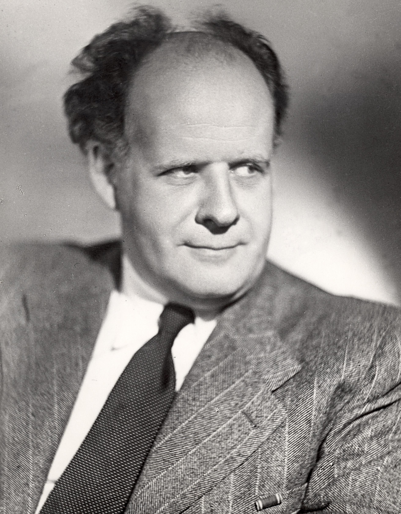
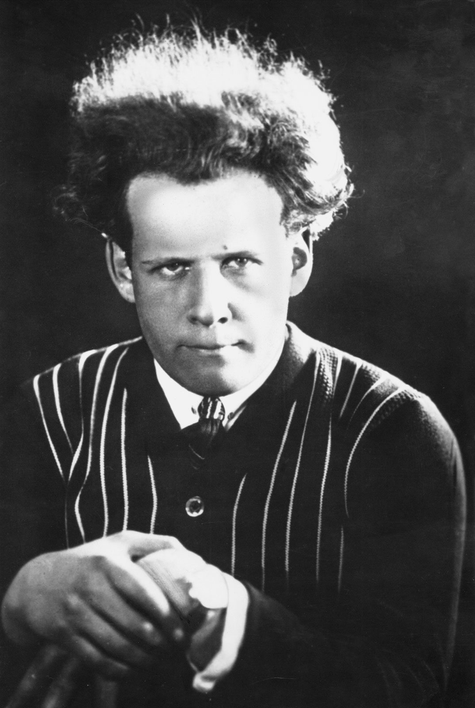
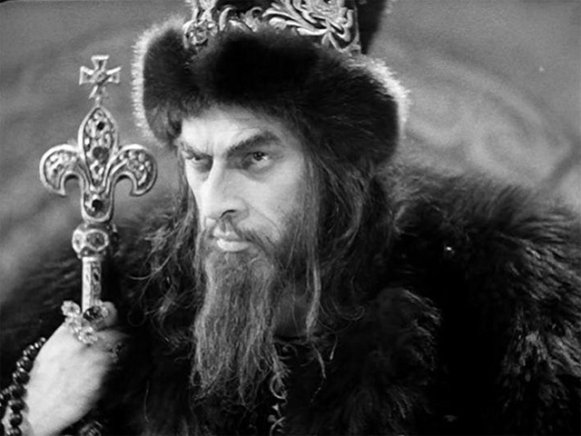

Сергей Михайлович Эйзенштейн
Из театра в кино

- Родился в январе 1898 года в Риге
- 1918-1919 Конец гражданской войны
- Театр в Москве
- 1920-е годы Первые успехи: Забастовка и Потемкин
- 1941-1946 директор Мосфильма
- 1948 Позор и смерть
Характеристики его фильмов
«монтаж аттракционов»...
Libre montage d'actions selectionnées et autonomes mais qui ont pour objectif précis un certain effet thématique final
Jacques Aumont
...на службе Советской власти
Oтличная работа: Иван Грозный
Cпецификации

- Год: 1945; 1958
- В главных ролях: Николай Черкасов, Людмила Целиковская
- две части
- Параллельно со Сталиным
Библиография
- kino-teatr.ru
- “montage d’attractions" - Jacques Aumont